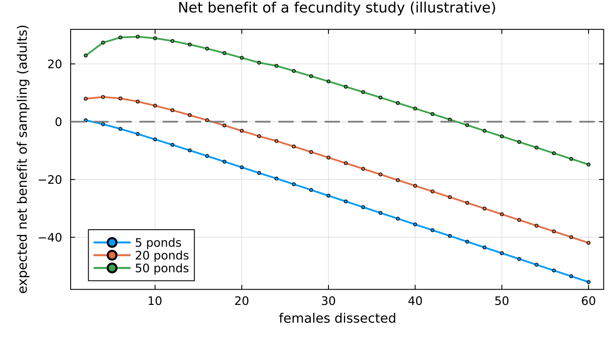

Which vital rate to measure: estimation, study design and scenario design
Simon Frost
- Motivation
- A pond of frogs
- Which input makes the estimate uncertain
- A study narrows an input; it does not reveal it
- A decision changes what is worth learning
- What a fecundity study is worth
- Scenario design: when there is no distribution to draw from
- What to take away
Motivation
A population model turns uncertain vital rates into an uncertain answer: a growth rate, a population size in five years, the better of two management actions. Three questions follow, and they are different questions.
- Which input makes the answer uncertain? This is sensitivity analysis, and it has an exact meaning as a value of information: under squared-error loss, the value of learning an input is the variance of the estimate that learning it would remove.
- What is a particular study worth, and how large should it be? A study does not reveal an input; it narrows it, at a cost.
- Which scenarios should be run at all, when there is no agreed probability distribution to draw from, only decisions to compare and uncertainties to bracket?
The methods are those of three papers, all written for health and all general: Jackson et al. (2021, Epidemiologic Methods 10:20210012) and Jackson et al. (2022, Annual Review of Statistics and Its Application 9:95) on the value of information in models that estimate as well as models that decide, with the R package voi that implements them; and Runge et al. (2024, Epidemics) on scenario design. This vignette applies them to a small ecological model.
All numbers are illustrative. The model, its vital rates and their distributions are invented for the example; nothing here describes a real population.
A pond of frogs
A population of frogs with two stages, juveniles and adults, projected a year at a time. Four vital rates are uncertain: adult survival, juvenile survival, the probability that a surviving juvenile matures, and fecundity (juveniles produced per adult per year, on the log scale).
using DecisionAnalysis
using LinearAlgebra: eigvals
using Random: Xoshiro, randn
include(joinpath("..", "_common.jl"))
const PRIOR = (; adult_survival=(; a=14, b=6), juvenile_survival=(; a=6, b=14),
maturation=(; a=8, b=8), log_fecundity=(; mean=log(2.0), sd=0.35))
projection_matrix(θ; adult_survival=θ.adult_survival, fecundity=exp(θ.log_fecundity)) =
[θ.juvenile_survival*(1 - θ.maturation) fecundity
θ.juvenile_survival*θ.maturation adult_survival]
growth_rate(θ) = maximum(real, eigvals(projection_matrix(θ)))growth_rate (generic function with 1 method)The beliefs about the three probabilities are Beta distributions and that about log fecundity is normal. The package depends on no library of distributions, so the Beta draws come from the conjugate analysis of its own binomial study: a Beta(a, b) is the posterior of a Beta(a, b − 1) after one failure in one trial.
function prior_sample(rng, name, n)
prior = getproperty(PRIOR, name)
haskey(prior, :a) ||
return prior.mean .+ prior.sd .* randn(rng, n)
one_failure = study_posterior(rng, BinomialStudy(name; n=1), (; x1=0),
(; prior.a, b=prior.b - 1); draws=n)
return getproperty(one_failure, name)
end
n = 4000
rng = Xoshiro(21)
draws = NamedTuple{keys(PRIOR)}(Tuple(prior_sample(rng, name, n) for name in keys(PRIOR)))
belief = SampleBelief(draws)
rows = [NamedTuple{keys(draws)}(Tuple(column[i] for column in draws)) for i in 1:n]
λ = growth_rate.(rows)
(mean_growth_rate=sum(λ) / n, sd=sqrt(sum(abs2, λ .- sum(λ) / n) / n),
probability_of_decline=count(<(1), λ) / n)(mean_growth_rate = 1.0403975459196872, sd = 0.15826905011306244, probability_of_decline = 0.42325)The population is about as likely to decline as to grow. That is the uncertainty to be reduced.
Which input makes the estimate uncertain
Three estimates are wanted from the model: the growth rate, the number of adults after five years with no intervention, and whether the population declines at all (an indicator, whose mean is the probability of decline). variance_reduction_table gives, for each input and each output, the share of the output’s variance that learning the input exactly would remove.
function adults_after(θ, action; years=5)
A = action === :fence ?
projection_matrix(θ; adult_survival=min(θ.adult_survival + 0.08, 1.0),
fecundity=0.75 * exp(θ.log_fecundity)) : projection_matrix(θ)
stages = action === :supplement ? [100.0, 38.0] : [100.0, 50.0]
for _ in 1:years
stages = A * stages
action === :supplement && (stages[1] += 25)
end
return stages[2]
end
inputs = collect(keys(PRIOR))
estimates = (; growth_rate=λ, adults_in_five_years=adults_after.(rows, :none),
declines=Float64.(λ .< 1))
shares = variance_reduction_table(belief, inputs, estimates)
output_names = ["growth rate", "adults in five years", "declines (0 or 1)"]
labelled_table("share of variance removed by learning", shares.inputs,
output_names, shares.share; digits=2)| share of variance removed by learning | growth rate | adults in five years | declines (0 or 1) |
|---|---|---|---|
| adult_survival | 0.22 | 0.16 | 0.17 |
| juvenile_survival | 0.36 | 0.34 | 0.23 |
| maturation | 0.12 | 0.12 | 0.09 |
| log_fecundity | 0.28 | 0.22 | 0.16 |
Juvenile survival is the largest single source of uncertainty in all three estimates, fecundity the second, and maturation the least. The shares in a column add up to a little less than one, because the inputs also act together. This is the table behind a heat map of inputs by outputs (Jackson et al. 2022), and its entries are the main-effect (Sobol) indices of sensitivity analysis, read here as values of information.
A share is hard to feel. The standard deviation of the estimate expected to be left after learning an input is easier:
labelled_table("standard deviation left after learning", vcat("nothing", shares.inputs),
output_names,
vcat(permutedims(sqrt.(shares.prior_variance)), shares.remaining_sd);
digits=3)| standard deviation left after learning | growth rate | adults in five years | declines (0 or 1) |
|---|---|---|---|
| nothing | 0.158 | 59.58 | 0.494 |
| adult_survival | 0.14 | 54.625 | 0.45 |
| juvenile_survival | 0.126 | 48.535 | 0.433 |
| maturation | 0.149 | 56.002 | 0.472 |
| log_fecundity | 0.134 | 52.634 | 0.453 |
Learning juvenile survival exactly would bring the standard deviation of the growth rate from 0.16 to about 0.13. Perfect knowledge of any one rate leaves most of the uncertainty in place: no single study can settle whether this population declines.
A study narrows an input; it does not reveal it
Suppose adult survival were to be estimated by marking m adults and counting how many are alive a year later (with every survivor found, to keep the example small). The count is binomial, a BinomialStudy. The expected reduction in the variance of the growth rate from that study is estimated by simulating the study once at every draw and regressing the growth rate on the count (the method of Strong et al. 2015 applied to an estimate instead of a payoff).
The belief about adult survival, a Beta(14, 6), is itself worth a sample: the equivalent number of binary observations of an estimate with mean 0.7 and that standard deviation.
prior_sd = sqrt(14 * 6 / (20^2 * 21))
n0 = equivalent_binomial_sample_size(0.7, prior_sd)20.0sizes = [20, 50, 100, 200, 500]
by_regression = [expected_variance_reduction(belief,
SummaryStatistics(belief,
BinomialStudy(:adult_survival;
n=m); seed=1);
quantity=λ) for m in sizes]
by_approximation = expected_variance_reduction(belief,
GaussianApproximation(:adult_survival; n0,
n=sizes); quantity=λ)
ceiling = expected_variance_reduction(belief, :adult_survival; quantity=λ)
md_table(["adults marked", "share of variance removed (regression)",
"share (Gaussian approximation)", "sd of the growth rate left"],
vcat([[m, r.share, g.share, sqrt(r.expected_posterior_variance)]
for (m, r, g) in zip(sizes, by_regression, by_approximation)],
[["adult survival known exactly", ceiling.share, ceiling.share,
sqrt(ceiling.expected_posterior_variance)]]); digits=3)| adults marked | share of variance removed (regression) | share (Gaussian approximation) | sd of the growth rate left |
|---|---|---|---|
| 20 | 0.114 | 0.11 | 0.149 |
| 50 | 0.151 | 0.157 | 0.146 |
| 100 | 0.185 | 0.183 | 0.143 |
| 200 | 0.203 | 0.199 | 0.141 |
| 500 | 0.209 | 0.211 | 0.141 |
| adult survival known exactly | 0.219 | 0.219 | 0.14 |
Marking 100 adults is worth most of what knowing adult survival exactly would be worth, and neither is worth much for the growth rate. The Gaussian approximation, which needs only the prior’s equivalent sample size and no simulated data, agrees with the regression: it says that a study of m animals removes the share m / (n0 + m) of what the parameter explains.
A decision changes what is worth learning
Now a decision. The manager can leave the pond alone, fence it (adult survival rises by 0.08, but the fence keeps a quarter of the breeding effort out of the water), or supplement it (twelve adults are taken into captivity at the start, and twenty-five captive-bred juveniles are released each year). The payoff is the number of adults in the pond after five years; no intervention is the baseline. There is no money in this problem.
const ACTIONS = [:none, :fence, :supplement]
payoffs(θ) = [adults_after(θ, action) for action in ACTIONS]
problem = DecisionProblem(PayoffTable(reduce(hcat, payoffs.(rows)); actions=ACTIONS), belief;
baseline=:none)
gains = expected_gain_estimates(problem)
md_table(["action", "expected adults in five years", "gain over no intervention",
"standard error"],
[[e.action, Float64(e.value), Float64(g.value), g.standard_error]
for (e, g) in zip(expected_utility_estimates(problem), gains)])| action | expected adults in five years | gain over no intervention | standard error |
|---|---|---|---|
none | 73.39 | 0 | 0 |
fence | 74.13 | 0.74 | 0.17 |
supplement | 75.42 | 2.03 | 0.09 |
Supplementing is best on average, by about two adults, and it is far from always best:
Q = problem.payoff.Q
md_table(["action", "share of draws in which it is best"],
[[a, count(i -> argmax(view(Q, :, i)) == k, 1:n) / n] for (k, a) in enumerate(ACTIONS)])| action | share of draws in which it is best |
|---|---|
none | 0.11 |
fence | 0.48 |
supplement | 0.41 |
perfect = evpi(problem, SampleAverage())
partial = [name => evppi(problem, name) for name in inputs]
voi_table(vcat("EVPI: all four rates" => perfect,
["EVPPI: " * String(name) => e for (name, e) in partial]))| estimate | value | standard error | act-now bias | cell-noise bias |
|---|---|---|---|---|
| EVPI: all four rates | 3.699 | 0.08 | 0 | 0 |
| EVPPI: adult_survival | 1.401 | 0.098 | 0 | - |
| EVPPI: juvenile_survival | 2 | 0.075 | 0 | - |
| EVPPI: maturation | 1.103 | 0.075 | 0 | - |
| EVPPI: log_fecundity | 0.909 | 0.069 | 0 | - |
Knowing everything would be worth under four adults per pond. Side by side with the estimation shares:
md_table(["input", "share of the growth rate's variance", "EVPPI for the decision (adults)"],
[[String(name), shares.share[k, 1], e.value] for (k, (name, e)) in enumerate(partial)];
digits=2)| input | share of the growth rate’s variance | EVPPI for the decision (adults) |
|---|---|---|
| adult_survival | 0.22 | 1.4 |
| juvenile_survival | 0.36 | 2 |
| maturation | 0.12 | 1.1 |
| log_fecundity | 0.28 | 0.91 |
The two orders are not the same. Fecundity is the second largest source of uncertainty about the growth rate and the least valuable thing to learn for the decision; adult survival, third as a source of uncertainty, is second for the decision. An input matters to a decision only through the difference between the actions, and the actions differ less in how they respond to fecundity than in how they respond to survival. Reducing uncertainty and improving a decision are different aims, and a sensitivity analysis of the estimate would have sent the survey effort to the wrong place.
Checking the regression
Every number above rests on a regression of payoffs on an input, and no regression method is reliable everywhere. compare_regressions fits each candidate with part of the draws left out and scores it on those:
candidates = (; linear=SplineRegression(; knots=0, degree=1), spline=SplineRegression(),
mars=MARSRegression(), blocks=StrongOakley())
compared = compare_regressions(problem, :log_fecundity, candidates)
md_table(["method", "variance of held-out draws explained", "EVPPI", "standard error"],
[[String(r.name), r.cv_r_squared, r.value, r.standard_error] for r in compared.methods];
digits=3)| method | variance of held-out draws explained | EVPPI | standard error |
|---|---|---|---|
| linear | 0.114 | 0.888 | 0.08 |
| spline | 0.134 | 0.909 | 0.069 |
| mars | 0.136 | 0.94 | 0.075 |
| blocks | 0.12 | 0.959 | 0.089 |
The methods agree on the value to within its standard error, and the adaptive splines (MARSRegression, the method voi reaches through earth) predict the held-out draws best. The share explained is small because fecundity is one of four inputs; what matters is that no method is far from the others.
The model is cheap, so the regression can also be checked against the definition itself: for each of 3,000 values of fecundity, average the payoffs over 1,000 values of the other rates.
others(rng, φ) = NamedTuple{(:adult_survival, :juvenile_survival, :maturation)}(
Tuple(only(prior_sample(rng, name, 1)) for name in (:adult_survival, :juvenile_survival,
:maturation)))
nested = evppi_nested(payoffs, rng -> (; log_fecundity=only(prior_sample(rng, :log_fecundity, 1))),
others; outer=3000, inner=1000, seed=1)
voi_table(["two-level Monte Carlo, 3 million runs of the model" => nested,
"regression on 4,000 runs" => partial[end][2]])| estimate | value | standard error | act-now bias | cell-noise bias |
|---|---|---|---|---|
| two-level Monte Carlo, 3 million runs of the model | 1.014 | 0.049 | 0.004 | 0.011 |
| regression on 4,000 runs | 0.909 | 0.069 | 0 | - |
Three million runs and four thousand agree to within about one standard error of their difference. The two-level estimate carries a second bias, from taking the best of noisy inner averages, which it reports.
What a fecundity study is worth
Fecundity is measured by dissecting gravid females and counting eggs. Each dissection gives one measurement of log fecundity, normal about the truth with standard deviation 0.5 (an assumption). The data reduce to their mean, a NormalStudy. The EVSI is estimated three ways.
fecundity_study(m) = NormalStudy(:log_fecundity; n=m, sd=0.5)
prior_worth = (0.5 / PRIOR.log_fecundity.sd)^2 # the prior, in dissections
methods_at(m) = ["regression on the study's mean" =>
evsi(problem, SummaryStatistics(problem, fecundity_study(m); seed=1)),
"Gaussian approximation" =>
evsi(problem, GaussianApproximation(:log_fecundity; n0=prior_worth, n=m)),
"moment matching" =>
evsi(problem, MomentMatching(fecundity_study(m); payoffs,
prior=PRIOR.log_fecundity, nested=50,
posterior_draws=2000))]
five, eighty = methods_at(5), methods_at(80)
md_table(["method", "EVSI, 5 females", "standard error", "EVSI, 80 females", "standard error "],
[[name, a.value, a.standard_error, b.value, b.standard_error]
for ((name, a), (_, b)) in zip(five, eighty)]; digits=3)| method | EVSI, 5 females | standard error | EVSI, 80 females | standard error |
|---|---|---|---|---|
| regression on the study’s mean | 0.671 | 0.061 | 0.893 | 0.063 |
| Gaussian approximation | 0.687 | 0.05 | 0.891 | 0.067 |
| moment matching | 0.752 | 0.281 | 0.979 | 0.176 |
Five dissections are already worth about three quarters of what fecundity is worth to the decision (its EVPPI, about 0.9 adults). The regression and the Gaussian approximation agree. Moment matching, which runs the model again at posterior draws and needs no summary statistic, is the least precise here, and its standard error says so: it works from variances, and the payoff of this model is skewed, so the variance that a study removes is a small difference between two large and noisy ones. Its own diagnostic, the share of the EVPPI variance removed, should lie between zero and one:
(five_females=five[end][2].details.variance_ratio,
eighty_females=eighty[end][2].details.variance_ratio,
expected=(five=5 / (prior_worth + 5), eighty=80 / (prior_worth + 80)))(five_females = 0.7583280433918498, eighty_females = 1.072728020434664, expected = (five = 0.7101449275362319, eighty = 0.9751243781094526))At five females it is above the share expected for a normal mean, and at eighty it is above one, which no study can be: the estimate is then capped at the EVPPI (details.capped), and what is reported for eighty females is that ceiling and not a measurement. Where a study’s data reduce to a few numbers, regress on them. Moment matching is for the study whose analysis is a model fit with no summary to regress on, and on a skewed payoff it needs far more runs of the model than were spent here.
How many females
A dissected female is an adult lost to the pond: the cost of the study is in the payoff’s own unit, adults, one for each animal sampled. What the study learns applies to every pond managed under the same decision. The expected net benefit of sampling is the EVSI per pond times the number of ponds, less the animals used.
candidate_sizes = collect(2:2:60)
curve = [evsi(problem, SummaryStatistics(problem, fecundity_study(m); seed=1))
for m in candidate_sizes]
ponds = [5, 20, 50]
net = [enbs_curve(curve; n=candidate_sizes, per_sample_cost=1, population=p) for p in ponds]
best = [optimal_sample_size(rows_; smooth=true) for rows_ in net]
md_table(["ponds under the decision", "best number of females", "near-optimal range",
"expected net benefit (adults)"],
[[p, b.n, "$(b.lower) to $(b.upper)", b.enbs] for (p, b) in zip(ponds, best)])| ponds under the decision | best number of females | near-optimal range | expected net benefit (adults) |
|---|---|---|---|
| 5 | 2 | 2 to 2 | 0.48 |
| 20 | 4 | 3 to 5 | 8.64 |
| 50 | 7 | 5 to 11 | 29.36 |
plt = Plots.plot(; xlabel="females dissected", ylabel="expected net benefit of sampling (adults)",
title="Net benefit of a fecundity study (illustrative)", legend=:bottomleft,
size=(700, 400))
for (p, rows_) in zip(ponds, net)
Plots.plot!(plt, candidate_sizes, [r.enbs for r in rows_]; label="$p ponds", marker=:circle,
markersize=2)
end
Plots.hline!(plt, [0]; color=:grey, linestyle=:dash, label="")
png_figure(plt)
For a handful of ponds the study barely repays the animals it uses; for fifty, about seven females are worth sacrificing, and anything from five to eleven is within a twentieth of the best. Net-benefit curves are flat near their top, so the smaller end of the range costs little. The number of ponds is an assumption about the future and the answer is proportional to it, which is why it is shown for three values.
Scenario design: when there is no distribution to draw from
Everything above took the four distributions as given. Often they are not: a group of modellers agrees on a few scenarios, runs them, and compares. Runge et al. (2024) treat such a set as an experimental design and ask first what it is for. Each axis of a design is either a decision or an uncertainty, and the kinds of axes fix what the design can answer.
Here is a design for the pond’s manager: the three actions, crossed with a low and a high value of the two inputs that matter most, the 10% and 90% points of their distributions.
quantile_of(x, p) = sort(x)[round(Int, p * length(x))]
bounds(name) = (; low=quantile_of(getproperty(draws, name), 0.1),
high=quantile_of(getproperty(draws, name), 0.9))
design = ScenarioDesign(decision_axis(:management, ACTIONS),
uncertainty_axis(:juvenile_survival, bounds(:juvenile_survival)),
uncertainty_axis(:log_fecundity, bounds(:log_fecundity));
purpose=:value_of_information, audience="the manager of the pond")
(class=design_class(design), scenarios=length(scenarios(design)))(class = :value_of_information, scenarios = 12)A decision crossed with an uncertainty is a value of information design: it compares the actions and tests the comparison against the uncertainty. Had the purpose been :forecasting, the constructor would have refused, since scenarios that differ in a decision are compared, not combined into a forecast, and a forecast needs probabilities of the levels.
The design plans the runs. The model meets the package through four small functions (the adapter verbs); the runs of the scenarios are paired, each replicate using the same random numbers under every action, though this model has no randomness to pair.
struct FrogPond
rates::NamedTuple
action::Symbol
end
DecisionAnalysis.with_parameters(p::FrogPond, θ) = FrogPond(merge(p.rates, θ), p.action)
DecisionAnalysis.apply_action(p::FrogPond, a) = FrogPond(p.rates, a.management)
DecisionAnalysis.simulate(p::FrogPond; rng) = adults_after(p.rates, p.action)
DecisionAnalysis.outcome(p::FrogPond, adults) = (; adults)
centre = (; adult_survival=0.7, juvenile_survival=0.3, maturation=0.5, log_fecundity=log(2.0))
# The model is deterministic: two identical replicates say so, with a standard error of zero.
table = outcomes(FrogPond(centre, :none), design_actions(design), design_draws(design);
replicates=2, seed=1)
scenario_problem = DecisionProblem(design, table, IndividualsUtility(:adults); baseline=:none)
gain_over_baseline(scenario_problem)PayoffTable{Float64}: 3 actions × 4 states
| action | low_low | high_low | low_high | high_high |
|---|---|---|---|---|
none | 0.0 | 0.0 | 0.0 | 0.0 |
fence | 6.78314 | 3.94703 | 3.92269 | -20.6971 |
supplement | 2.25704 | 10.9388 | -1.53448 | -3.36327 |
The states are labelled by the levels of juvenile survival and of log fecundity, in that order. With no probabilities on the scenarios the problem is over a scenario set: there is no expected value, and no EVPI. What a value of information design answers is whether the better action is the same in every scenario.
robustness = decision_robustness(scenario_problem)
md_table(["scenario (juvenile survival, fecundity)", "best action"],
[[String(state), join(String.(best), ", ")] for (state, best) in robustness.best])| scenario (juvenile survival, fecundity) | best action |
|---|---|
| low_low | fence |
| high_low | supplement |
| low_high | fence |
| high_high | none |
(reversal=robustness.reversal, worst_loss_by_committing_now=robustness.losses,
minimax_regret=decide(scenario_problem, MinimaxRegret()).chosen,
maximin=decide(scenario_problem, Maximin()).chosen)(reversal = true, worst_loss_by_committing_now = [:none => 10.938815192343824, :fence => 20.697113191634344, :supplement => 5.457166616214494], minimax_regret = [:supplement], maximin = [:fence])The preferred action reverses across the scenarios: fencing where juvenile survival is low, supplementing or doing nothing where it is high. That reversal is what gives information its value. A value of information design in which the preferred action never reverses is a relief to the decision maker, and also a question: were the uncertainties on its axes the ones that matter to the decision? (Of the six such designs that Runge et al. review, none showed a reversal.) The two rules that need no probabilities disagree here, which is itself a finding: the choice depends on the attitude to the worst case.
Many uncertainties, few scenarios
For a sensitivity analysis design every axis is an uncertainty. Four inputs at two levels make sixteen scenarios; factor_effects gives the effect of each axis on the growth rate and its share of the variation between scenarios.
sensitivity = ScenarioDesign((uncertainty_axis(name, bounds(name)) for name in inputs)...;
purpose=:sensitivity_analysis)
rates_of(s) = merge(centre, NamedTuple{Tuple(inputs)}(Tuple(getproperty(bounds(name),
getproperty(s, name))
for name in inputs)))
full = factor_effects(sensitivity, growth_rate.(rates_of.(scenarios(sensitivity))))
half_design = fractional_design(sensitivity, :log_fecundity => (:adult_survival,
:juvenile_survival, :maturation))
half = factor_effects(half_design, growth_rate.(rates_of.(scenarios(half_design))))
md_table(["input", "effect on the growth rate, 16 scenarios", "share",
"effect, 8 scenarios (half fraction)"],
[[String(a.axis), a.effect, a.share, b.effect] for (a, b) in zip(full.main, half.main)];
digits=3)| input | effect on the growth rate, 16 scenarios | share | effect, 8 scenarios (half fraction) |
|---|---|---|---|
| adult_survival | 0.195 | 0.221 | 0.203 |
| juvenile_survival | 0.251 | 0.367 | 0.251 |
| maturation | 0.133 | 0.103 | 0.134 |
| log_fecundity | 0.216 | 0.27 | 0.218 |
The shares from sixteen scenarios are close to those from four thousand draws at the top of this vignette, and for the same reason: the model is nearly additive in its inputs (the interactions between pairs of axes take up about four percent of the variation). The half fraction recovers the same main effects from eight scenarios, at the price that the effect of fecundity cannot be told from the three-way interaction of the others. When every scenario must be run by every modelling team of a hub, halving the design is worth that price.
What to take away
About the problem (all illustrative):
- The largest source of uncertainty about the growth rate is juvenile survival, and no single rate, known exactly, would settle whether the population declines.
- What is worth learning for the decision is not what makes the estimate uncertain: fecundity ranks second for the growth rate and last for the choice of action.
- A fecundity study of five to eleven females is near the best size if fifty ponds are managed under the decision, and hardly worth its animals for five ponds.
- Moment matching was the least reliable of the three estimates of EVSI on this skewed payoff, and said so through its standard error and its variance ratio.
- Across the scenarios of a simple design the preferred action reverses with juvenile survival.
About the methods:
variance_reduction_tableandexpected_variance_reductionvalue information in a model that estimates and takes no decision; with a study in place of a parameter they give the reduction expected from its data.BinomialStudyandNormalStudydescribe a study once, for the regression, the importance-sampling and the moment-matching estimates of EVSI.compare_regressionsandevppi_nestedcheck the regression that everything else rests on.enbs_curveandoptimal_sample_sizeturn a curve of EVSI into a sample size, with the cost in the payoff’s own unit.ScenarioDesignstates what a set of scenarios is for, plans its runs, and withdecision_robustnessandfactor_effectsreads them.
Not done here: the log-score (entropy) form of the value of information for estimating a whole distribution, which Jackson et al. (2022) describe and this package does not implement; and a study that informs several rates at once, such as a mark-recapture analysis with imperfect detection, for which moment matching is the natural estimator.